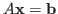
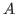

The Factored Sparse Approximate Inverse (FSAI) is a well-known preconditioner for Symmetric Positive Definite (SPD) linear systems

. The native FSAI algorithm was originally introduced by Kolotilina and Yeremin [1] about 20 years ago. They proposed a Frobenius norm minimization procedure for computing an explicit sparse approximation of the inverse of the exact lower Cholesky factor of
. FSAI is a robust preconditioner featuring attractive theoretical properties, however its performance in the solution of SPD systems often proves lower than that of other competing approximate inverses, such as AINV [2] or SPAI [3]. Recently, FSAI has experienced a renewed interest in connection with the growing popularity and diffusion of parallel computers. Since its computation proceeds independently row-by-row, it can be easily and efficiently distributed among many processors. Such an interest has led to the development of a number of variants that aim at improving its performance.
A crucial factor for attaining good FSAI quality and efficiency is the
selection of an appropriate sparsity
pattern. Originally, the algorithm was conceived assuming that a pattern
 for the non-zero entries
of the preconditioner is statically guessed by the user. Based upon
Neumann series expansion of
for the non-zero entries
of the preconditioner is statically guessed by the user. Based upon
Neumann series expansion of  , a
typical setting assumes taking as
, a
typical setting assumes taking as  the lower part of the pattern
of a small power of
, or of a
sparsified
[4]. A post-filtration of the resulting FSAI factor is
also recommended [5]. More recently,
a dynamic pattern computation strategy has been proposed [6]. It is based
upon adaptively choosing for
each row the most significant terms to be retained. Another interesting
strategy consists of building the
preconditioner recursively, i.e., computing a dense and high quality FSAI
as the product of a few sparse
factors [7].
the lower part of the pattern
of a small power of
, or of a
sparsified
[4]. A post-filtration of the resulting FSAI factor is
also recommended [5]. More recently,
a dynamic pattern computation strategy has been proposed [6]. It is based
upon adaptively choosing for
each row the most significant terms to be retained. Another interesting
strategy consists of building the
preconditioner recursively, i.e., computing a dense and high quality FSAI
as the product of a few sparse
factors [7].
Identifying the most efficient technique for generating an FSAI non-zero pattern is strongly problem-dependent. In most cases, a combination of existing strategies provides the best efficiency. For example, it is often a good idea to generate a very sparse static pattern using a small power of the sparsified , and then improve it by means of a few steps of a dynamic procedure. Alternatively, one can build a symbolic FSAI dynamically, and then compute the preconditioner using the symbolic factor as the pattern.
This communication describes a new software package, called FSAIPACK, that collects a comprehensive set of algorithms for computing FSAI preconditioners in a parallel computational environment. FSAIPACK implements the following methods:
An open source driver implementing the command language interface is included.
The scope of this work is to collect a comprehensive set of techniques for building FSAI preconditioners into an integrated computational environment, thus providing the user with a flexible and efficient tool that can be easily incorporated into existing codes. The FSAIPACK potential is demonstrated by a set of numerical experiments that combine static and dynamic preconditioners and prove more cost effective than any single algorithm. In particular, our experiments show that combining different methods for building FSAI can significantly improve the native preconditioner quality, becoming fully competitive with, and often superior to, other approximate inverse techniques.
References:
[1] L.Y. Kolotilina and A.Y. Yeremin, Factorized sparse approximate
inverse preconditioning
I. Theory, SIAM Journal on Matrix Analysis and Applications, 14 (1993), 45-58.
[2] M. Benzi, C.D. Meyer, and M. Tuma, A sparse approximate inverse preconditioner for the conjugate gradient method, SIAM Journal on Scientific Computing, 17 (1996), 1135-1149.
[3] M. Grote and T. Huckle, Parallel preconditioning with sparse approximate inverses, SIAM Journal on Scientific Computing, 18 (1997), 838-853.
[4] E. Chow, A priori sparsity patterns for parallel sparse approximate inverse preconditioners, SIAM Journal on Scientific Computing, 21 (2000), 1804-1822.
[5] L.Y. Kolotilina and A.Y. Yeremin, Factorized sparse approximate inverse preconditioning. IV. Simple approaches to rising efficiency, Numerical Linear Algebra with Applications, 6 (1999), 515-531.
[6] C. Janna and M. Ferronato, Adaptive pattern research for Block FSAI preconditioners, SIAM Journal on Scientific Computing, 33 (2011), 3357-3380.
[7] L. Bergamaschi and A. Martinez, Banded target matrices and recursive FSAI for parallel preconditioning, Numerical Algorithms, 61 (2012), 223-241.
[8] C. Janna, M. Ferronato, G. Gambolati, and F. Sartoretto, FSAIPACK: a software package for high performance Factored Sparse Approximate Inverse preconditioning, ACM Transactions on Mathematical Software, submitted.